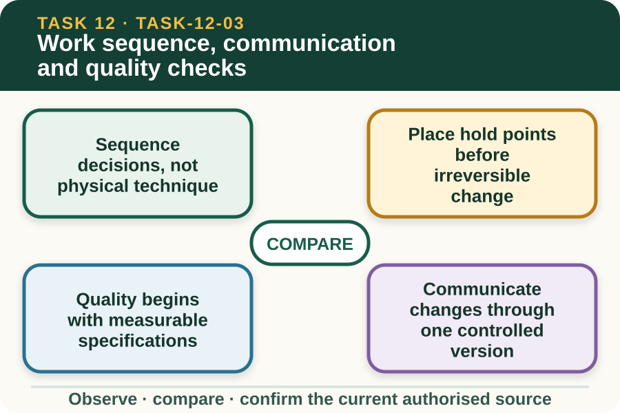

Classroom presentation · 8 slides
Work sequence, communication and quality checks
Task 12 · 1 of 8
Work sequence, communication and quality checks
Build a logical supervised sequence with hold points and specification checks.

Speaker notes
Teaching move (web-deck purpose): Use the module visual and the fictional worked example to move students from observation to a source-led decision. Ask students to name the evidence, the authority gap and the next safe communication step. Misconception and help: Identify the earliest stage where the unresolved fact would be relied on. Stop before commitment, not after. Applied action: Arrange a fencing decision sequence. Order teacher-supplied decision cards from brief to close-out, insert hold points and attach each quality check to its source. Exclude all practical-method cards. Boundary: This supplementary learning draws on mapped AHCINF206 concepts. Current signed TAS and RTO documents control cohort delivery, assessment and competency decisions; current workplace procedures, supervision and authorised sources control real work. [Sources] - Source basis: AHCINF206 Release 1 work-instruction, reporting and work-outcome concepts. The authorised plan, local procedures, supervised demonstration and assessor-controlled requirements define every practical stage and acceptance decision. - Visual visual-task-12-03: Generated locally from accepted Stage 05 module headings; no external image copied. - Course visual manifest: work/pi/visuals/visual-manifest.json
Task 12 · 2 of 8
Map the learning
- Sequence decisions, not physical technique
- Place hold points before irreversible change
- Quality begins with measurable specifications
Retrieve: Where should a hold point be placed?
Speaker notes
Teaching move (learning map): Use the module visual and the fictional worked example to move students from observation to a source-led decision. Ask students to name the evidence, the authority gap and the next safe communication step. Misconception and help: Identify the earliest stage where the unresolved fact would be relied on. Stop before commitment, not after. Applied action: Arrange a fencing decision sequence. Order teacher-supplied decision cards from brief to close-out, insert hold points and attach each quality check to its source. Exclude all practical-method cards. Boundary: This supplementary learning draws on mapped AHCINF206 concepts. Current signed TAS and RTO documents control cohort delivery, assessment and competency decisions; current workplace procedures, supervision and authorised sources control real work. [Sources] - Source basis: AHCINF206 Release 1 work-instruction, reporting and work-outcome concepts. The authorised plan, local procedures, supervised demonstration and assessor-controlled requirements define every practical stage and acceptance decision. - Visual visual-task-12-03: Generated locally from accepted Stage 05 module headings; no external image copied. - Course visual manifest: work/pi/visuals/visual-manifest.json
Task 12 · 3 of 8
Notice the evidence
Sequence decisions, not physical technique
A safe planning sequence moves through confirm brief, verify current site information, reconcile resources, review hazards and roles, obtain supervisor release, complete supervised work stages, check specifications and close records. It describes decision gates rather than physical actions.
The current student package, local procedures and teacher demonstration control what happens within each practical stage. This site does not teach construction, repair or use of practical resources.
Place hold points before irreversible change
A hold point requires confirmation before the job crosses a significant boundary, such as relying on an unverified line, entering a changed area, accepting a substituted material or responding to a specification conflict. The exact local hold points belong to the approved plan.
Planning them early gives the supervisor a clear place to review evidence. A hold point added after the work has passed the uncertainty cannot protect the decision it was meant to control.
Speaker notes
Teaching move (theory idea 1): Use the module visual and the fictional worked example to move students from observation to a source-led decision. Ask students to name the evidence, the authority gap and the next safe communication step. Misconception and help: Identify the earliest stage where the unresolved fact would be relied on. Stop before commitment, not after. Applied action: Arrange a fencing decision sequence. Order teacher-supplied decision cards from brief to close-out, insert hold points and attach each quality check to its source. Exclude all practical-method cards. Boundary: This supplementary learning draws on mapped AHCINF206 concepts. Current signed TAS and RTO documents control cohort delivery, assessment and competency decisions; current workplace procedures, supervision and authorised sources control real work. [Sources] - Source basis: AHCINF206 Release 1 work-instruction, reporting and work-outcome concepts. The authorised plan, local procedures, supervised demonstration and assessor-controlled requirements define every practical stage and acceptance decision. - Visual visual-task-12-03: Generated locally from accepted Stage 05 module headings; no external image copied. - Course visual manifest: work/pi/visuals/visual-manifest.json
Task 12 · 4 of 8
Use the source boundary
Quality begins with measurable specifications
Observable quality evidence may include whether the completed position, alignment, dimensions, component identity, gate location and finish match the authorised plan. The plan must state the acceptance criteria and permitted tolerance where relevant.
Do not invent a standard from appearance. A fence can look straight in a photograph while still conflicting with the documented line, purpose or site requirement.
Communicate changes through one controlled version
When site evidence affects the plan, the learner reports the exact location, source, observed difference and decision needed. The supervisor confirms whether the plan changes and ensures affected people receive one current version.
Verbal changes should be closed through the authorised record or document-control process. Otherwise, one worker may follow the old instruction while another follows the new one.
Speaker notes
Teaching move (theory idea 2): Use the module visual and the fictional worked example to move students from observation to a source-led decision. Ask students to name the evidence, the authority gap and the next safe communication step. Misconception and help: Identify the earliest stage where the unresolved fact would be relied on. Stop before commitment, not after. Applied action: Arrange a fencing decision sequence. Order teacher-supplied decision cards from brief to close-out, insert hold points and attach each quality check to its source. Exclude all practical-method cards. Boundary: This supplementary learning draws on mapped AHCINF206 concepts. Current signed TAS and RTO documents control cohort delivery, assessment and competency decisions; current workplace procedures, supervision and authorised sources control real work. [Sources] - Source basis: AHCINF206 Release 1 work-instruction, reporting and work-outcome concepts. The authorised plan, local procedures, supervised demonstration and assessor-controlled requirements define every practical stage and acceptance decision. - Visual visual-task-12-03: Generated locally from accepted Stage 05 module headings; no external image copied. - Course visual manifest: work/pi/visuals/visual-manifest.json
Task 12 · 5 of 8
Connect evidence to action
Quality checks belong at useful stages
End inspection is important, but some specification evidence may be easier to verify at intermediate authorised stages. The plan should name what is checked, which source defines it, who confirms it and what happens when the result is outside the stated criterion.
A learner records the observed result and refers any acceptance decision outside their role. They do not hide a variation because later work may make it less visible.
Close work with status and ownership
A close-out record distinguishes completed work, checked specifications, unresolved issues, controlled waste or reusable material status, affected documents and next owner. It avoids a broad statement that the fence is finished when a hold point remains open.
The teacher and authorised assessor decide whether practical performance meets formal requirements. A website sequence or quality explanation is rehearsal, not proof of practical competence.
Speaker notes
Teaching move (theory idea 3): Use the module visual and the fictional worked example to move students from observation to a source-led decision. Ask students to name the evidence, the authority gap and the next safe communication step. Misconception and help: Identify the earliest stage where the unresolved fact would be relied on. Stop before commitment, not after. Applied action: Arrange a fencing decision sequence. Order teacher-supplied decision cards from brief to close-out, insert hold points and attach each quality check to its source. Exclude all practical-method cards. Boundary: This supplementary learning draws on mapped AHCINF206 concepts. Current signed TAS and RTO documents control cohort delivery, assessment and competency decisions; current workplace procedures, supervision and authorised sources control real work. [Sources] - Source basis: AHCINF206 Release 1 work-instruction, reporting and work-outcome concepts. The authorised plan, local procedures, supervised demonstration and assessor-controlled requirements define every practical stage and acceptance decision. - Visual visual-task-12-03: Generated locally from accepted Stage 05 module headings; no external image copied. - Course visual manifest: work/pi/visuals/visual-manifest.json
Task 12 · 6 of 8
Retrieve and check
Where should a hold point be placed?
- Before work relies on an unresolved source, site condition or specification decision.
- Only after all work is complete.
- Wherever it makes the diagram look balanced.
Teacher reveal
Correct. The hold point prevents the next stage from assuming unresolved information is acceptable.
Stop before commitment, not after.
Speaker notes
Teaching move (retrieval): Use the module visual and the fictional worked example to move students from observation to a source-led decision. Ask students to name the evidence, the authority gap and the next safe communication step. Misconception and help: Identify the earliest stage where the unresolved fact would be relied on. Stop before commitment, not after. Applied action: Arrange a fencing decision sequence. Order teacher-supplied decision cards from brief to close-out, insert hold points and attach each quality check to its source. Exclude all practical-method cards. Boundary: This supplementary learning draws on mapped AHCINF206 concepts. Current signed TAS and RTO documents control cohort delivery, assessment and competency decisions; current workplace procedures, supervision and authorised sources control real work. [Sources] - Source basis: AHCINF206 Release 1 work-instruction, reporting and work-outcome concepts. The authorised plan, local procedures, supervised demonstration and assessor-controlled requirements define every practical stage and acceptance decision. - Visual visual-task-12-03: Generated locally from accepted Stage 05 module headings; no external image copied. - Course visual manifest: work/pi/visuals/visual-manifest.json Use option-specific feedback after the learner commits to an answer.
Task 12 · 7 of 8
Construct a source-led response
Create a decision-level sequence for a fictional fencing job. Include document, site, resource, hazard, supervisor, quality and close-out hold points without describing practical techniques.
- Before planning, confirm the current…
- Before site release, verify… and refer…
- Before supervised practical work, the authorised person confirms…
- The specification checks are defined by… and recorded as…
- If an observation differs, the hold point is…
- Close-out records completed, unresolved and next-owner information as…
Success criteria
- Sequences decisions and authority gates logically
- Links quality checks to an identified specification
- Shows controlled version communication
- Includes no construction, equipment or repair technique
Speaker notes
Teaching move (guided written response): Use the module visual and the fictional worked example to move students from observation to a source-led decision. Ask students to name the evidence, the authority gap and the next safe communication step. Misconception and help: Identify the earliest stage where the unresolved fact would be relied on. Stop before commitment, not after. Applied action: Arrange a fencing decision sequence. Order teacher-supplied decision cards from brief to close-out, insert hold points and attach each quality check to its source. Exclude all practical-method cards. Boundary: This supplementary learning draws on mapped AHCINF206 concepts. Current signed TAS and RTO documents control cohort delivery, assessment and competency decisions; current workplace procedures, supervision and authorised sources control real work. [Sources] - Source basis: AHCINF206 Release 1 work-instruction, reporting and work-outcome concepts. The authorised plan, local procedures, supervised demonstration and assessor-controlled requirements define every practical stage and acceptance decision. - Visual visual-task-12-03: Generated locally from accepted Stage 05 module headings; no external image copied. - Course visual manifest: work/pi/visuals/visual-manifest.json
Task 12 · 8 of 8
Close the loop
Arrange a fencing decision sequence
Order teacher-supplied decision cards from brief to close-out, insert hold points and attach each quality check to its source. Exclude all practical-method cards.
- Name the strongest evidence in the scenario.
- Explain the decision or referral it supports.
- State which current source or authorised person controls real work.
Boundary: This supplementary learning draws on mapped AHCINF206 concepts. Current signed TAS and RTO documents control cohort delivery, assessment and competency decisions; current workplace procedures, supervision and authorised sources control real work.
Speaker notes
Teaching move (exit and application): Use the module visual and the fictional worked example to move students from observation to a source-led decision. Ask students to name the evidence, the authority gap and the next safe communication step. Misconception and help: Identify the earliest stage where the unresolved fact would be relied on. Stop before commitment, not after. Applied action: Arrange a fencing decision sequence. Order teacher-supplied decision cards from brief to close-out, insert hold points and attach each quality check to its source. Exclude all practical-method cards. Boundary: This supplementary learning draws on mapped AHCINF206 concepts. Current signed TAS and RTO documents control cohort delivery, assessment and competency decisions; current workplace procedures, supervision and authorised sources control real work. [Sources] - Source basis: AHCINF206 Release 1 work-instruction, reporting and work-outcome concepts. The authorised plan, local procedures, supervised demonstration and assessor-controlled requirements define every practical stage and acceptance decision. - Visual visual-task-12-03: Generated locally from accepted Stage 05 module headings; no external image copied. - Course visual manifest: work/pi/visuals/visual-manifest.json